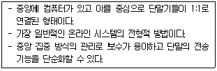

PC정비사-1급 (2015-10-18 기출문제)
1과목: PC운영체제
1. 운영체제의 발전과정과 추세에 대한 다음의 설명 중 잘못된 것은?
- 운영체제는 초기에는 자원의 효율적 관리가 가장 중요한 목표였으나 점차 사용 환경이 더 중요한 목표가 되었다.
- 사용환경의 편리성을 위해 하드웨어적인 문제는 점차 사용자로부터 격리되어 시스템의 책임하에 운영하도록 개선되었다.
- 사용 편의성 증대를 목적으로 그림 사용자 접속 환경(GUI:Graphic User Interface)이 개발되어 사용자는 직관적이고 간편하게 사용할 수 있도록 하였다.
- GUI 환경은 사용의 편의성을 위해 각종 설정을 단순화 시켰으므로 누구나 쉽게 시스템의 설정 상태를 자유롭게 조절할 수 있게 되었다.
(정답률: 57%)

2. 시스템 처리 방식에 대한 설명 중 올바른 것은?
- 실시간 처리 시스템(Real Time Processing System) : 데이터가 발생하는 즉시 컴퓨터에서 처리가 이루어지는 시스템으로 은행의 온라인이나 각종 예약업무에 대표적으로 사용된다.
- 일괄 처리 방식(Batch Processing System) : CPU가 한 사용자로부터 다른 사용자로 빠르게 교환시켜 주는 시스템으로 많은 사용자가 동시에 사용할 때도 실제는 한 개의 컴퓨터를 사용하고 있지만 각 사용자는 독립된 컴퓨터로 작업하는 느낌을 가질 수 있다.
- 시분할 시스템(Time Sharing System) : 여러 개의 작업을 하나로 묶어 자동적으로 한 작업에서 다른 작업으로 연속될 수 있도록 한 처리 방식이다.
- 시분할 시스템(Time Sharing System)은 주로 항공표, 기차표 예매 등에 사용된다.
(정답률: 79%)
3. Windows 7 Professional 을 사용하는 PC의 특정 디스크에서 임의의 파일을 찾아보려고 할 때 사용되는 방법이 잘못된 것은?
- 바탕화면에서 [Windows]+[F3]키를 누른다.
- 시작메뉴에서 [프로그램 및 파일 검색]을 클릭한다.
- 내 컴퓨터에서 오른쪽 마우스 버튼을 누른 후 [S]키를 누른다.
- Windows 탐색기에서 [Ctrl]+[E]키를 누른다.
(정답률: 74%)
4. Windows의 OS 중 기본 커널로 NT5를 사용하는 운영체제는?
- Windows XP
- Windows Vista
- Windows 7
- Windows 8.1
(정답률: 49%)
5. Windows에서 부팅 후 자동으로 특정 프로그램을 실행하려고 한다. 해당 프로그램의 단축 아이콘을 프로그램 메뉴의 어디에 위치하여야 하는가?
- 시작 프로그램
- 기본 프로그램
- 보조 프로그램
- 빠른 실행
(정답률: 81%)
6. 보안이나 해킹 방지를 위한 공유 폴더의 관리 방법으로 잘못된 것은?
- 공유 폴더는 되도록이면 만들지 않는 것이 좋다.
- 공유 폴더는 반드시 암호를 걸어 사용한다.
- 공유를 해야 하는 폴더가 2개 이상 있을 경우에는, 드라이브의 루트 폴더를 공유하여 접근이 용이하도록 한다.
- 공유 폴더의 용도에 따라 필요한 액세스 권한만 부여한다.
(정답률: 80%)
7. FAT32 파일 시스템을 지원하지 않는 운영체제는?
- Windows NT 4.0
- Windows ME
- Windows XP
- Windows 7
(정답률: 71%)
8. 디스크 관리에 대한 설명 중 잘못된 것은?
- Windows 7 의 디스크 관리는 [제어판]-[시스템 및 보안]-[관리도구]-[컴퓨터 관리] 에서 실행이 가능하다.
- 새로운 파티션을 생성하기 위하여 디스크 위에서 마우스의 오른쪽 버튼을 클릭하여 파티션만들기를 수행한다.
- 새로운 드라이브를 생성한 후 꼭 재부팅을 하고 포맷 과정을 거쳐야 한다.
- 논리 드라이브를 삭제하면 해당 드라이브 내의 모든 데이터도 함께 상실 된다.
(정답률: 70%)
9. Windows 7 Professional 에서 "장치 관리자"를 통해서 할 수 있는 작업이 아닌 것은?
- 디스크 장치에 쓰기 캐싱 설정
- 장치 드라이버 업데이트
- DVD 지역 코드 변경
- 쿨러 제어를 통한 시스템 온도 조절
(정답률: 70%)
10. Windows 7 Professional 에서 로컬 그룹 정책 편집기를 실행하는 명령어는?
- gpedit.msc
- eventvwr.msc
- lusrmgr.msc
- regedit.exe
(정답률: 70%)
11. 사용자 데이터 원본을 다양한 데이터베이스 관리 시스템의 데이터에 액세스할 수 있도록 도와주는 관리 도구는?
- 데이터 원본(ODBC)
- 로컬 보안 정책
- 구성 요소 서비스
- 이벤트 뷰어
(정답률: 77%)
12. Windows 7 Professional의 로컬 영역 연결 상태에서 볼 수 있는 프로토콜이 아닌 것은?
- Internet Protocol Vershion 4 (TCP/IPv4)
- Internet Protocol Vershion 6 (TCP/IPv6)
- VDSL-PPP
- Link-Layer Topology Discovery Responder
(정답률: 74%)
13. 다음 항목 가운데 인터넷 서비스가 아닌 것은?
- WWW
- LOGON
- FTP
- USENET
(정답률: 76%)
14. 웹브라우저가 기본적으로 이해하는 정보의 형태를 제외한 동영상이나 소리 등을 듣기 위해 별도로 설치하는 프로그램은?
- CGI 프로그램
- 자바 프로그램
- 플러그인 프로그램
- 쿠키 프로그램
(정답률: 73%)
15. Windows OS 에서 부팅 관련 사항을 수정할 수 있는 방법으로 잘못된 것은?
- Windows 7 Professional : 시작-실행-MSINFO-소프트웨어환경
- Windows XP : 시작-제어판-시스템-고급-시작 및 복구의 설정-편집
- Windows 7 Professional : 시작-실행-MSCONFIG-부팅탭
- Windows XP : 시작-실행-CMD 에서 c:\로 이동 EDIT BOOT.INI
(정답률: 62%)
2과목: PC주변기기
16. EEPROM에 대한 설명으로 잘못된 것은?
- 칩을 구성하는 소자의 전하를 전기적으로 변화시킴으로써 데이터를 기록, 소거한다.
- 모뎀, 비디오카드, 메인보드, SCSI 컨트롤러 등에 사용된다.
- 전원이 없이도 장기간 안정적으로 기억하는 비휘발성 기억 장치이다.
- 재기록 가능 회수의 제한이 없이 영구적으로 사용가능하다.
(정답률: 64%)
17. 레이드를 구성하고 있는 하드디스크 중 하나에 문제가 생겼을 때 복구를 할 수 있는 시스템이 아닌 것은?
- 레이드 0
- 레이드 1
- 레이드 0+1
- 레이드 5
(정답률: 63%)
18. 자기(Magnetism)를 사용하여 저장하는 방식이 아닌 장치는?
- FDD
- Zip Drive
- Blu-ray
- HDD
(정답률: 64%)
19. 현재 KS X 5002 규정에 국가 표준으로 공인되어 있는 한글 자판은?
- 2벌식 자판
- 3벌식 자판
- 3벌식 최종자판
- 3벌식 390 자판
(정답률: 69%)
20. 마우스의 1인치당 포인트 이동 픽셀 단위는?
- DPI
- ppm
- mm
- inch
(정답률: 79%)
21. 스캐너로 입력한 사진을 컴퓨터로 가져 오기 위해 필요한 드라이버로 올바른 것은?
- IDE
- GUI
- CUI
- TWAIN
(정답률: 67%)
22. 모니터 화면의 한 화소는 빨강, 녹색, 파랑의 3개 색소로 구성되어 있다. 다음 중 화점 간격을 나타내는 것은?
- 해상도
- 도트 피치
- 수평 주파수
- 수직 주파수
(정답률: 72%)
23. 토너 기반의 프린터로 Fuser 라는 고온 고압의 정착기를 통과하면서 토너 가루가 완전히 용지에 정착이 되어 인쇄되는 프린터의 종류는?
- 도트 매트릭스 프린터
- 감열식 프린터
- 레이저 프린터
- 잉크젯 프린터
(정답률: 72%)
24. 다이렉트X의 기능에 대해 설명한 것 중 잘못된 것은?
- 다이렉트 3D - 3D 그래픽 가속 기능 제어
- 다이렉트 플레이 - 네트워크 게임 지원
- 다이렉트 MPEG - 동영상 재생 규격
- 다이렉트 사운드 - 현실감 있는 사운드 지원
(정답률: 50%)
25. L2 캐시의 동작 방식이 아닌 것은?
- 비동기 방식
- 동기 방식
- 슬롯 방식
- 파이프라인 버스트 방식
(정답률: 66%)
26. 전원관리용 규격으로 운영체제가 직접 제어하도록 하는 기능은?
- ATAPI
- UPS
- ATX
- ACPI
(정답률: 64%)
27. USB에 관한 설명 중 잘못된 것은?
- 시리얼 포트의 일종이다.
- 4개의 핀이 있으며, +5V가 케이블 자체에서 공급된다.
- 최대 127개의 주변장치를 연결할 수 있다.
- USB 1.1규격에 따르면 연결된 모든 장치는 최대 20Mbps의 전송속도를 지원한다.
(정답률: 60%)
28. 전자 악기간의 디지털 신호를 주고받기 위하여 각종 신호를 약속한 일종의 약속 언어인 MIDI의 원어로 올바른 것은?
- Multi Interface for Digital Instrument
- Multi Input Data Instrument
- Musical Instrument Digital Interface
- Musical Interface for Digital Input
(정답률: 66%)
29. 전원공급기에서 직류 출력전압이 안정되면 ‘H'상태로 되고, 정상치 이하로 떨어지면 ‘L’상태로 되는 단자는?
- +12 Volt
- -12 Volt
- Power Good
- +5 Volt
(정답률: 66%)
30. 다음 중 성격이 다른 디바이스는?
- USB 3.0
- SCSI
- PCI
- IEEE 1394
(정답률: 64%)
3과목: 디지털 논리회로
31. 펄스(pulse) 진폭 변조와 펄스 위상 변조를 비교한 설명으로 옳지 않은 것은?
- 펄스 위상 변조가 채널수를 더 크게 할 수 있다.
- S/N비는 펄스 진폭 변조가 더 떨어진다.
- 채널수가 같을 때는 펄스 진폭 변조 방식의 펄스폭이 넓어도 된다.
- 모두 다중통신 방식에 적합하다.
(정답률: 57%)
32. 다이오드에 관한 설명 중 옳지 않은 것은?
- 한쪽 방향으로만 전류가 흐른다.
- 교류를 직류로 변환시키는 역할을 한다.
- 복조파에 실려 있는 신호파형을 축출하는 것을 검파 다이오드라고 한다.
- 제너 다이오드는 역방향 전류가 가해졌을 때 전압 변동이 크다.
(정답률: 56%)
33. 2진수 체계에서 2의 보수와 1의 보수 간의 관계는?
- 2의 보수 = 1의 보수 + 1
- 2의 보수 = 1의 보수 + 2
- 2의 보수 = 1의 보수 - 1
- 2의 보수 = 1의 보수 - 2
(정답률: 64%)
34. 함수 F=(A'B)+(B'C)+(C'D)의 쌍대(dauality)관계가 옳은 것은?
- (A+B')(B+C')(C+D')
- (AB')+(BC')+(CD')
- (A'+B)(B'+C)(C'+D)
- (A'+B'+C')(B+C+D)
(정답률: 62%)
35. 전가산기(full adder)의 설명으로 옳은 것은?
- 입력비트3개의 합과 출력올림수를 구하는 조합논리회로
- 입력비트2개의 합과 출력올림수를 구하는 조합논리회로
- 2개의 반가산기와 1개의 AND게이트로 구성
- 2개의 반가산기와 1개의 NOT게이트로 구성
(정답률: 48%)
4과목: PC유지보수
36. CPU, 메인보드칩셋, 메모리가 서로 호환 되지 않는 것은?
- 코어 2듀오 E8400 - Intel G41 - DDR3 10600
- 셀러론 D 프레스캇 350 - Intel 865 - DDR 3200
- 셀러론 G 1610 - Intel P43 - DDR2 8500
- 코어 i5 3570 - Intel B75 - DDR3 12800
(정답률: 64%)
37. AWARD BIOS의 STANDARD CMOS SETUP 메뉴의 세부항목에 대한 설명 중 올바른 것은?
- Virus Warning - 하드디스크의 부트섹터를 보호하는 옵션이므로, 운영체제 설치 시에는 반드시 Enable로 설정하여 부트섹터를 수정 못하도록 설정한다.
- CPU Internal Cache - 이 옵션을 켜놓으면 시스템 속도가 떨어지므로 반드시 Disabled로 설정한다.
- Boot Up Floppy Seek - 부팅할 때 바이오스가 플로피디스크 드라이브를 검색하게 하는 항목으로, 이 기능을 Disable로 설정하면 Floppy Disk 드라이브를 사용할 수 없다.
- Security Option - System을 선택하면 바이오스 셋업에 들어올 때와 부팅될 때 모두 암호를 물어본다.
(정답률: 49%)
38. PnP 장치가 관리하지 않는 것은?
- DMA 채널
- TCP 포트
- IRQ
- 입출력 Address
(정답률: 68%)
39. CD-ROM 연결 설정에 대한 설명 중 잘못된 것은 ?
- CD-ROM은 전원선을 연결해야 한다.
- IDE 케이블을 마스터-슬레이브 점퍼를 맞추어 연결한다.
- IDE 케이블을 통해 CD-ROM과 HDD를 함께 연결하여 사용할 수 있다.
- CD-ROM의 오디오 단자는 라인-인이며, 사운드카드에 CD-인을 연결한다.
(정답률: 75%)
40. 전자파로 인한 피해가 학계에서 보고되자 미국이나 EU 각국은 관련 규정을 마련해 규제를 강화하고 있다. 인증 규격 중 전자제품과 관련이 없는 것은?
- KGMP (Korea Good Manufacturing Practice)
- 정보기기 전자파적합 등록
- CE (Communaut' Europeen)
- FCC (Federal Communications Commission)
(정답률: 51%)
41. 컴퓨터를 부팅하자마자 ‘Press [F1] to continue’라는 메시지가 모니터에 나타난다. 그 원인으로 올바른 것은?
- 키보드 혹은 마우스 연결 불량
- CMOS의 그래픽 카드 설정 오류
- ROM BIOS 고장
- 캐시 메모리 불량
(정답률: 68%)
42. 다음은 하드디스크 A/S에 대한 설명이다. 올바르지 않은 것은?
- 하드디스크의 덮개를 열어본 경우는 무상 A/S가 안된다.
- 하드디스크 수리는 1:1 교환 방식으로 이루어진다.
- 하드디스크에 붙은 스티커를 제거한 경우는 무상 A/S가 안된다.
- 정상적인 유통 과정을 거치지 않은 제품은 A/S가 안된다.
(정답률: 52%)
43. Windows를 사용하던 중 “KERNEL32.DLL에서 잘못된 연산이 수행되었습니다.”라는 메시지가 나타나는 이유로 잘못된 것은?
- 어플리케이션간 메모리 충돌이 일어날 때
- KERNEL32.DLL의 버전이 다르거나 손상된 경우
- CPU와 메모리의 FSB가 맞지 않을 경우
- 메인 메모리가 불량인 경우
(정답률: 61%)
44. 케이스 전면의 스위치 표시 램프에 대한 설명으로 맞는 것은 ?
- LED는 디스크가 움직일 때 불이 들어온다.
- LED는 방향을 반대로 연결해도 문제가 없다.
- LED스위치는 극성이 없으므로 위치만 맞으면 된다.
- LED에 지속적으로 불이 안들어오면 컴퓨터에 이상이 생긴 것이다.
(정답률: 60%)
45. CPU와 메모리의 대역폭을 맞추기 위해 듀얼 채널 메모리 구성을 통해 업그레이드 하고자 한다. 올바르지 않은 것은?
- DDR2 4200, DDR2 5300 메모리를 혼용해 채널을 구성해도 좋으나 이 경우 속도가 높은 메모리 속도로 동작한다.
- 집적도가 다른 두 개의 모듈 램이라도 클럭 스피드가 같으면 사용이 가능하다.
- DRAM 버스 대역폭이 같아야 한다.
- 같은 채널을 구성하는 모듈 램 모두 단면 램이거나, 양면 램이어야 한다.
(정답률: 71%)
46. ATI의 크로스파이어(CrossFire)를 사용하기 위한 조건으로 잘못된 것은?
- 메인보드에는 라데온 익스프레스 X200 칩셋 이상이 장착되어야 한다.
- 동작 클럭만 일치하다면 AMD와 NVIDIA의 VGA로도 구성이 가능하다.
- PCI-Express 기반이므로 구형 AGP기반 그래픽카드는 사용이 불가능하다.
- 크로스파이어 에디션 그래픽카드를 반드시 마스터로 설정하고, 표준 그래픽카드는 슬레이브로 설정해야 한다.
(정답률: 59%)
47. CPU가 CAS/RAS 에 신호를 보내어 메모리의 정보가 도착할 때까지의 시간을 나타내는 용어는?
- Lead
- Delay
- Latency
- Integrity
(정답률: 67%)
48. Over Clocking에 대한 설명 중 잘못된 것은?
- Over Clocking을 하는 방법은 클럭 배수와 외부 클럭을 조정하는 두 가지 방법이 있다.
- CPU의 Over Clocking은 CPU의 성능을 향상시키고, CPU의 수명을 연장시킨다.
- 메인보드에서 지원하는 클럭 수 까지만 오버 클럭킹이 가능하다.
- CPU의 작동 클럭은 클럭 배수와 외부 클럭의 곱에 의해 결정된다.
(정답률: 75%)
49. DVD에 대한 설명으로 잘못된 것은?
- SATA 방식의 인터페이스만을 사용한다.
- 고화질과 고음질의 영상을 기록할 수 있다.
- 싱글 레이어 단면의 경우 약 4.7GB의 대용량 데이터를 저장할 수 있다.
- MPEG-2 기술을 접목시켜 비디오 데이터까지 저장이 가능하다.
(정답률: 64%)
50. 노트북에 사용하는 PCMCIA에서 하드디스크를 사용하기 위한 규격은?
- Type 1
- Type 2
- Type 3
- Type 4
(정답률: 54%)
5과목: PC네트워크
51. 회선 경쟁 선택(Contention) 방식의 프로토콜에 관한 설명으로 올바른 것은?
- 트래픽이 많은 멀티포인트 회선에 사용할 경우에는 비효율적이다.
- 이 방식의 프로토콜에는 토큰링 토큰버스와 같은 방식이 있다.
- 터미널의 통신량, 사용빈도에 따라 경쟁 선택의 기회를 차등적으로 부여할 수 있다.
- 경쟁 선택이 동시에 일어나도 데이터가 충돌하여 유실되는 경우가 있다.
(정답률: 52%)
52. 아래 내용의 통신망 구성 형태로 올바른 것은?

- 버스형
- 망형
- 스타형
- 링형
(정답률: 69%)
53. 패킷 스위칭 방식의 설명으로 잘못된 것은?
- 패킷 단위로 데이터 전송이 일어난다.
- 메시지를 일정 크기로 자른 것을 패킷이라 한다.
- Store-and-Forward 방식을 이용한다.
- 많은 양의 정보를 연속으로 보낼 때 유효한 방식이다.
(정답률: 62%)
54. OSI 참조 모델의 7계층 중 구문 변환과 문맥 제어 서비스를 제공하는 계층으로 올바른 것은?
- 세션 계층
- 응용 계층
- 네트워크 계층
- 프리젠테이션 계층
(정답률: 60%)
55. 스니퍼링(Sniffering)을 원천적으로 막을 수 있는 방법은?
- 스위치 허브의 사용
- 라우터의 사용
- DNS의 사용
- 스태커블 허브의 사용
(정답률: 60%)
56. 네트워크의 허브의 종류가 아닌 것은?
- Dummy Hub
- Switch Hub
- Intelligent Hub
- Queue Hub
(정답률: 67%)
57. 라우터에 대하여 잘못 설명한 것은?
- LAN과 LAN을 연결할 때 사용한다.
- LAN과 WAN을 연결할 때 사용한다.
- 데이터 전송 경로를 설정해준다.
- OSI 7 Layer의 응용 계층에 속한다.
(정답률: 65%)
58. 네트워크 케이블의 길이가 길어지는 경우 중간에서 발생하는 손실과 신호의 약화를 방지하기 위하여 설치하는 신호 증폭 장치는 무엇인가?
- 라우터
- 허브
- 브릿지
- 리피터
(정답률: 70%)
59. 다음 중 IP주소 구조에 대한 설명 중 잘못된 것은?
- Class A: 주소범위 0.0.0.0 ∼ 127.0.0.0
- Class B: 주소범위 128.0.0.1 ∼ 191.255.255.254
- Class C: 주소범위 192.0.0.1 ∼ 223.255.255.254
- Class D: 주소범위 224.0.0.0 ∼ 239.255.255.255
(정답률: 54%)
60. Internet상의 Host에 FTP를 이용하여 접속하고자 할 경우 특별한 계정이 없이도 접속이 가능한 경우가 있다. 이때 사용되는 미리 정의된 표준계정은?
- Guest
- User
- Anonymous
- Custom
(정답률: 71%)
설명: GUI 환경은 사용자가 시스템을 더 쉽게 사용할 수 있도록 개발되었지만, 모든 설정이 자유롭게 조절될 수 있는 것은 아닙니다. 일부 설정은 시스템의 안정성을 위해 제한되어 있으며, 일반 사용자는 이러한 설정을 변경할 수 없습니다. 따라서 이 설명은 부분적으로 잘못되었습니다.